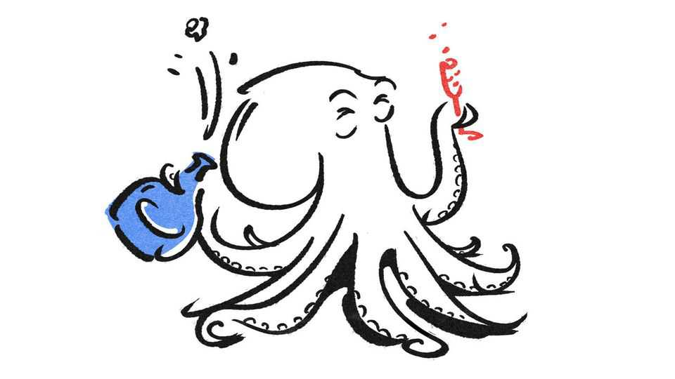

The Brexit benefits you haven’t heard of
Something to celebrate for cephalopods and puffins
June 18th 2026

Doomerism dominates Britain’s Brexit discourse. But Britain is reaping many an unsung benefit.
Imagine you run a Kentish vineyard. Before Brexit, EU rules stopped you using a Bocksbeutel—a pot-bellied bottle reserved for certain German, Greek, Italian and Portuguese wines. Today you are free to sell your wine in whatever shape of bottle you like. And consumers have the option to buy champagne (even better, English sparkling wine) by the pint, Winston Churchill’s preferred portion size, rather than the 700ml mandated by Brussels.
Those who love sweets can also count Brexit as a win. Since 2022 European icing and marshmallows have become noticeably less white. Brussels banned the use of titanium dioxide (a whitening agent) as a food additive for fear it might damage consumers’ DNA. Britain’s regulators were unconvinced by the danger. So British confections remain as white as a Dover cliff.
Other winners include cephalopods. EU law recognises the sentience only of vertebrates. Britain’s independent animal-welfare rules extend this to several invertebrates, among them octopuses and lobsters.
Then there are puffins. Danish fishermen’s pursuit of sand eels, the seabirds’ favourite food, has been blamed for dwindling puffin numbers. The EU prevents member states from imposing unilateral fishing bans. Free from such strictures, Britain has sided with the puffins over the Danes—outlawing the harvesting of sand eels in British waters. Record numbers of puffins have been reported on Skomer island off the Welsh coast this year.
On land, liberalised rules on gene-edited crops (heavily regulated by Brussels) allow farmers to benefit from seeds engineered to withstand Britain’s changing weather. Outside the EU’s common agricultural policy, thanks to tweaked incentives, hedgerows (and the wildlife they support) are flourishing: 1,800km of them have been planted since 2023.
When he was Tory minister for “Brexit opportunities” Jacob Rees-Mogg spoke of freeing Britain from EU laws “regulating the power of vacuum cleaners”. In 2017 the EU banned the sale of those with a wattage greater than 900W. One minister told the House of Lords that their return could rid the chamber of mice gorging on uncleaned crumbs. Yet the cap remains in place. Herculean Hoovers are among the many Brexit benefits that are no doubt still to come. ■
For more expert analysis of the biggest stories in Britain, sign up to Blighty, our weekly subscriber-only newsletter.